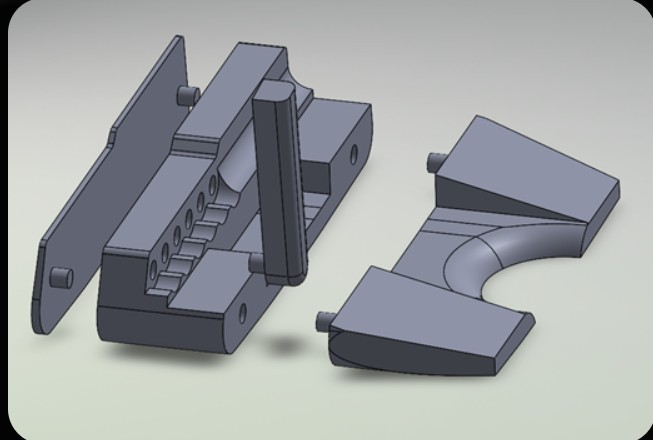

Throughout my engineering studies, I've had the opportunity to work on a variety of hands-on projects, applying theoretical knowledge to real-world challenges. Here are some highlights:
- Adaptive Mouse Design
- Designed and prototyped an ergonomic computer mouse adapted for users with paraplegia, focusing on accessibility and ease of use.
- RC Aircraft Landing Gear
- Developed and tested custom landing gear solutions for remote-controlled aircraft, optimizing for weight, durability, and shock absorption.
- Solar Car Ramp System
- Engineered a lightweight, modular ramp system for safely loading and unloading a competitive solar car, improving team efficiency.
- Modular Golf Putter
- My senior design project involves the creation of a golf putter with interchangeable components for length, angle and weight adjustment, enhancing player customization.